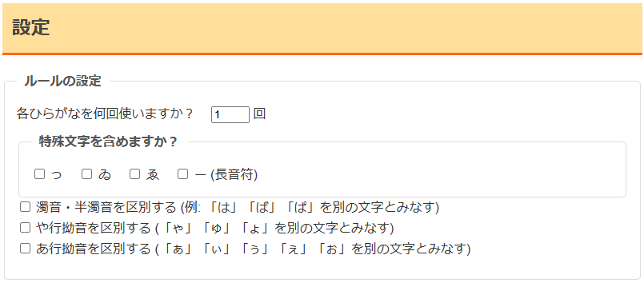

言葉遊び『パングラム』を補助するツールを作った話

制作のきっかけ
言葉遊びコミュニティ『ピーコロン』で1年半ほど活動してきた中で、印象に残りやすいメンバーを見て「自分もこうなりたい」と思うようになりました。
しかし、今すぐセンスのいい言葉遊びや高難易度の言葉遊びに挑戦したところで、まともにできないであろうことは火を見るよりも明らかでした。そこで、「ツール開発」という視点に着目します。
AIによるバイブコーディングを活用して「パングラム」という言葉遊びの補助ツールを作ったところ、高い評価を得ることに成功しました。
「パングラム」とは？
ここで、パングラムとは何か解説します。パングラムという単語を初めて目にする方も多いことでしょう。
「いろはにほへと」から始まる有名な文は、皆さんご存知ですね？ あの文は、日本語の仮名文字を47文字(ん除外、ゐゑ有)被りなく使用して作られた文です。
このように、仮名文字46文字を全て同じ回数だけ使って文を作る遊びのことをパングラムというのです。
この言葉遊びで補助すべき部分は、「超過/不足して使用されている文字の機械的判定」だと考え、このツールを作るに至りました。
こだわった点・工夫した点
- ピーコロンユーザーのストイックな言葉遊びに応える
『ピーコロン』のユーザーは言葉遊びに対して非常にストイックです。そのため、単なる文字カウントツールではなく、高度な縛りプレイを含めた多様なプレイスタイルに対応できるよう、設定項目を細かくしました。

その後の運用 / 振り返り・学び
リリース後、ユーザーから「長音記号が入力できない」というフィードバックを得ました。
原因は文章入力エリアの正規表現を「ひらがな、スペース、改行コードのみ」に縛ったことで、記号扱いされた長音が弾かれたものでした。このバグを修正したアップデートの後には、不具合報告やバッドレビューの無い状態で運用できています。
今回の開発で、ユーザーのニーズになりそうなものを見つけてすぐに叶えられるAI開発の高速性の恩恵を強く感じました。
その一方で、「正規表現のエッジケース（長音符など）」といったAIが見落としがちな仕様の穴は、最終的に人間のディレクションとテストでカバーしなければならないという、実運用ならではの教訓を得ることができました。